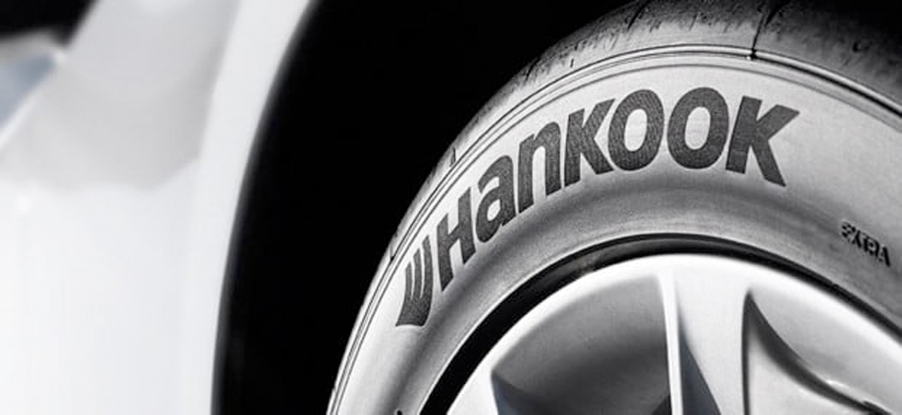

Kontrol Technology
Kontrol Technology는 한국타이어앤테크놀로지만의 기술철학이자 원칙입니다. Kontrol의 ‘K’는 ‘Kinetic(동역학)’ 즉 ‘움직임’을 의미하는 것으로 타이어의 움직임이 자동차, 운전자, 노면 간의 상호작용을 완벽하게 ‘Control(제어)’ 할 수 있다는 기본개념에서부터 출발합니다.
한국타이어앤테크놀로지 모든 상품은 Kontrol Technology라는 개념을 바탕으로 '성능, 승차감, 안전, 친환경'의 네 가지 성능을 전달하고, 이를 통해 소비자에게 드라이빙의 즐거움을 가져다 주는 것을 목표로 합니다. 극한의 타이어 성능을 필요로 하는 모터스포츠에서부터 비 오는 날 안전하게 자녀들을 학교에 태워다 주는 일상 생활에 이르기까지, Kontrol Technology는 길 위의 모든 운전자들과(Drivers) 함께합니다.
‘HPS-Cell’의 타이어는 복합적인 강성 구현을 위해 Unit-cell(단위 격자)형태의 구조체가 적용된 Airless(비공기입) 타이어입니다. 진보된 센서 기술을 활용해 타이어 트레드와 노면 상태를 실시간으로 파악합니다. 또한 마모에 따른 위험을 대응하여 가변 휠과 최적화된 인프라를 통해 노면에 맞는 트레드 패턴을 자동으로 교체하고 메인터넌스의 효율성을 극대화합니다. 교체형 트레드는 마모되는 부분만을 분리하여 교체하기에 자원의 효율성 측면에서 기여하고, 반영구적인 비공기입 구조체와 시너지를 이루어 미래 도시에 걸맞는 친환경 인프라를 구축합니다.
4가지요소
- 01Performance
- 다양한 주행 조건 하에서도 운전자가 원하는 방향으로 자동차를 컨트롤 할 수 있는 최상의 핸들링 성능과 열악한 도로조건에서도 최상의 타이어 성능을 유지시키는 내구성을 향상 시킴으로써 타이어 성능을 극대화합니다.
- 컴퓨터 시뮬레이션을 이용하여 다양한 운전 조건 하에서 타이어의 도로 접지 형태를 분석하는 설계 시스템 OCP (Optimized Contact Patch) 을 활용합니다.
- 02Safety
- 운전자의 안전을 지키기 위해 무엇보다 중요한 것은 타이어와 도로면 사이의 마찰력입니다. 마찰력을 통해 타이어는 미끄러짐을 방지할 수 있기 때문입니다.
- 또한 타이어의 제동 Braking 성능도 안전과 직결되는 중요한 요소입니다. 타이어의 마찰과 제동 성능은 타이어의 재료, 타이어의 단단함, 형상, 그리고 타이어의 접지면의 패턴 설계 등으로써 향상시킬 수 있습니다.
- 03Comfort
- 실제 상황에서 타이어가 어떤 성능을 발휘하고 어떻게 작동하는가에 대한 긴밀한 이해력을 기반으로 충격, 소음, 진동을 경감시켜 주행 경험의 스트레스를 제거합니다.
- 타이어는 자동차의 편안한 승차감을 위해 매우 중요한 역할을 합니다. 한국타이어앤테크놀로지의 컨트롤 테크놀로지는 도로와 자동차 사이의 충격을 완충하는 물리적인 편안함은 물론 청각적인 부분까지 생각하여 보다 편안한 타이어를 개발하는데 노력하고 있습니다.
- 04Environment
- 한국타이어앤테크놀로지는 타이어의 각 부분과 회전저항 사이의 프로파일을 분석하고 Dyna-ProFET 고무와 실리카의 최적배합 IMS (Innovative Mixing System)을 통해 타이어의 다른 성능에 영향을 주지 않으면서도 회전 저항을 낮추어 연료를 절약할 수 있는 타이어를 설계합니다.
- 뿐만 아니라 한국타이어앤테크놀로지는 합성 고무, 카본 블랙, 합성 오일 등 타이어에 사용되는 많은 정유 부산물들을 환경 친화적인 재료로 점차 대체해 가고 있으며 생산과정에 있어서도 수질 오염물질의 정화, 냄새저감 및 온실가스 배출 최소화 등 오염물질 배출을 줄인 ‘친환경 생산’을 위한 지속적인 투자를 진행하고 있습니다.